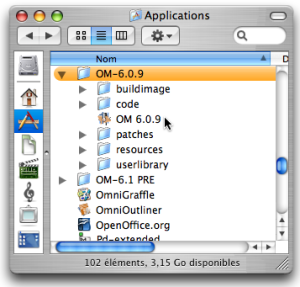

Launching OM
Start Up
The OM application –
OM X.X.X – is located in the
|  |
OM can also be started from an alias anywhere in the machine hard drive or from the dock. To start the application, double click on the OM icon. |
Creation of a Workspace
An OM session begins with the opening of a workspace[1], a working environment which is used at a session.
The start up dialogue window opens after starting OM. It offers three options :
Open a workspaceThis workspace must already be located in you hard drive. Any existing workspace can be open with this option. Pick the workspace root directory in the dialogue window.
Create a new workspaceChoose a name and location in order to create a workspace, which will then open automatically.
Open previous workspaceRefers to the workspace that was open at the last session. This option is not available for a first use.
If you already have some experience with OM, note that the Ircam workspaces whose installation was previously offered are not available anymore. The tutorial patches contained in these workspaces can now be imported independently to any current workspace via the Help menu.
Workspaces must be created in the user's home directory or one of its sub folders. Creating a workspace without writing permission can cause important crashes and data loss.
- Workspace
OpenMusic's working environment. Each session starts with choosing a workspace, the equivalent of a desktop where programs are created and organized, and where items can be stored.